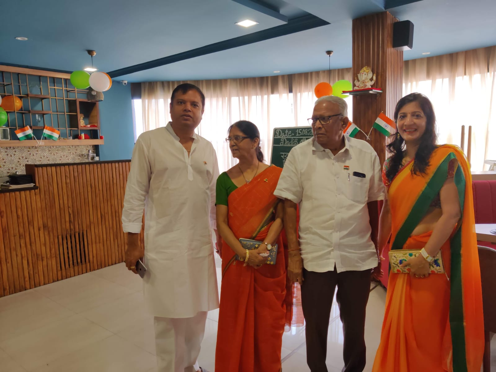
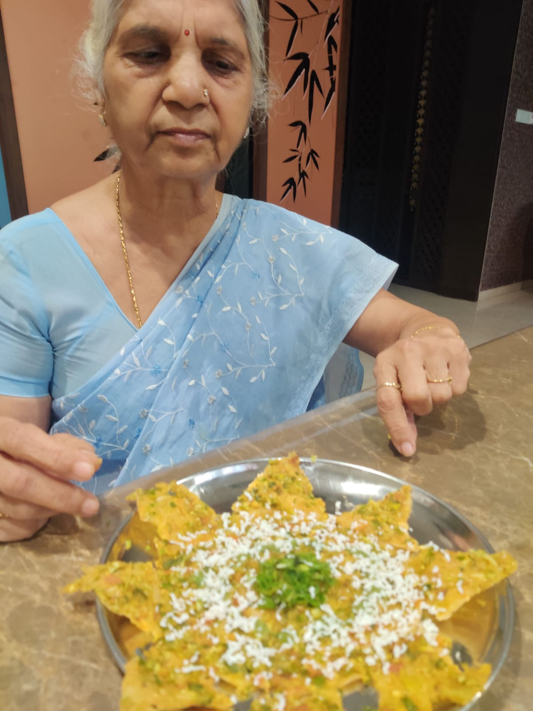

Every photograph has a little life inside it. Tap one to look closer.
An irreplaceable life, lovingly remembered.
Dadi’s little museum.
Come in slowly. These are the things we want to remember.
01 · Where it began
A girl from Baroda.
Born in Vadodara in 1947, Dadi loved mathematics and went to New Era Girls School. She still remembers a teacher who came back after tuition had ended—because he had finally solved the problem.
The teacher who returned
He had thought about the unfinished sum all the way home. Then he came back to share the solution. So many years later, Dadi still remembers that little moment of dedication.
A memory Dadi shared with Purvi.
The Baroda around her
Explore old photographs and then-and-now views. Ask Dadi: “Which of these places do you remember?”
The archive covers different periods; individual photographs need their dates checked.
02 · A life unfolding
From Baroda to Raipur.

1947
Her story begins in Vadodara.
1964
At 17, she marries Dada. Raipur becomes home.
2001
Purvi is born. A grandmother and granddaughter begin a very special friendship.
Today
Still curious. Still trying recipes. Still making everyone’s life a little easier.
The best part of the story is that we are still in it.
03 · The everyday treasures
Little things, deeply loved.

✿Pink rosesA favourite flower
♡WinterA favourite season
☼Haapus mangoA favourite fruit
♧Chinese checkersA favourite game
From her kitchen
Dahi vada, idli, and kheer. Diwali sev made with care. New recipes from YouTube—and the first little taste brought over to Purvi.
Last year, she tried sushi and loved it. Her curiosity keeps making room for something new.
The strongest kind of gentleness
She follows her Jain practice with devotion, cares deeply for living beings, and looks after others when they fast. Her kindness appears in the smallest everyday acts.